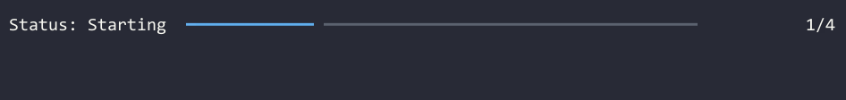
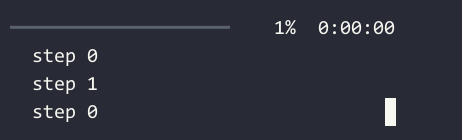

Progress Bars¶
Mordant provides a simple way to create animated progress bars in your terminal.
Basic Usage¶
You can use the progressBarLayout DSL to define the layout of your progress bar. Then you
can start the animation either on a thread with animateOnThread, or
using coroutines with [animateOnCoroutine].animateOnThread is JVM-only, but animateOnCoroutine
is available on all platforms using the mordant-coroutines module.
Once the animation is started, you can update the progress bar by calling update and advance.
val progress = progressBarLayout {
marquee(terminal.theme.warning("my-file-download.bin"), width = 15)
percentage()
progressBar()
completed(style = terminal.theme.success)
speed("B/s", style = terminal.theme.info)
timeRemaining(style = magenta)
}.animateInCoroutine(terminal)
launch { progress.execute() }
// Update the progress as the download progresses
progress.update { total = 3_000_000_000 }
while (!progress.finished) {
progress.advance(15_000_000)
Thread.sleep(100)
}
val progress = progressBarLayout {
marquee(terminal.theme.warning("my-file-download.bin"), width = 15)
percentage()
progressBar()
completed(style = terminal.theme.success)
speed("B/s", style = terminal.theme.info)
timeRemaining(style = magenta)
}.animateOnThread(terminal)
val future = progress.execute()
// Update the progress as the download progresses
progress.update { total = 3_000_000_000 }
while (!progress.finished) {
progress.advance(15_000_000)
Thread.sleep(100)
}
// Optional: wait for the future to complete so that the final frame of the
// animation is rendered before the program exits.
future.get()

Changing Text While Animation is Running¶
You can pass data to the progress bar by using progressBarContextLayout, which allows you to set a context value that your progress bar can use to render dynamic text.
val progress = progressBarContextLayout<String> {
text { "Status: $context" }
progressBar()
completed()
}.animateInCoroutine(terminal, context = "Starting", total = 4, completed = 1)
launch { progress.execute() }
val states = listOf("Downloading", "Extracting", "Done")
for (state in states) {
delay(2.seconds)
progress.update {
context = state
completed += 1
}
}

Tip
If you want a builder instead of a DSL, you can use the ProgressLayoutBuilder
Multiple Progress Bars¶
You can create multiple progress bars running at the same time using MultiProgressBarAnimation. Call addTask for each progress bar you want, passing in the layout for that bar. You can use the same layout for multiple tasks, or different layouts for some of them.
You can call advance and update on each task to update them separately.
The columns of the progress bars will have their widths aligned to the same size by default,
but you can change this by setting the alignColumns parameter in the layout.
val overallLayout = progressBarLayout(alignColumns = false) {
progressBar(width = 20)
percentage()
timeElapsed(compact = false)
}
val taskLayout = progressBarContextLayout<Int> {
text(fps = animationFps, align = TextAlign.LEFT) { "〉 step $context" }
}
val progress = MultiProgressBarAnimation(terminal).animateInCoroutine()
val overall = progress.addTask(overallLayout, total = 100)
val tasks = List(3) { progress.addTask(taskLayout, total = 1, completed = 1, context = 0) }
launch { progress.execute() }
for (i in 1..100) {
overall.advance()
tasks[i % 3].update { context = i }
delay(100)
}

Tip
The progress animation will keep running until all tasks are finished. If you want to stop sooner,
you can set all the tasks’ completed equal to their total, or cancel the coroutine scope or
future that the animation is running in.
Available Progress Bar Cell Types¶
Mordant provides several cell types that you can use to build your progress bar layouts, or you can make your own with cell or text.

// Use a custom maker to build render the cells in a vertical definitionList
object VerticalProgressBarMaker : ProgressBarWidgetMaker {
override fun build(rows: List<ProgressBarMakerRow<*>>): Widget {
return definitionList {
inline = true
val widgets = MultiProgressBarWidgetMaker.buildCells(rows)
for ((term, desc) in widgets.flatten().windowed(2, 2)) {
entry(term, desc)
}
}
}
}
val progress = progressBarLayout {
text("text"); text("text")
text("marquee"); marquee("marquee", width = 10, scrollWhenContentFits = true)
text("completed"); completed()
text("speed"); speed()
text("percentage"); percentage()
text("timeRemaining"); timeRemaining()
text("timeElapsed"); timeElapsed()
text("spinner"); spinner(Spinner.Lines())
text("progressBar"); progressBar()
}.animateOnThread(terminal, maker = VerticalProgressBarMaker)
launch { progress.execute() }
while (!progress.finished) {
progress.advance()
delay(100)
}
| Cell Type | Description |
|---|---|
| text | You can make a static text cell with text(""), or a dynamic one with text {""} |
| marquee | A fixed-width text cell that scrolls its contents when they’re larger than the cell. You can make the content always scroll by setting scrollWhenContentFits=true |
| completed | A cell that shows the completed count and optionally the total. It uses SI units for amounts larger than 1000 |
| speed | A cell that shows the speed of the progress, in bytes per second. |
| percentage | A cell that shows the completed percentage. |
| timeRemaining | A cell that shows the estimated time remaining, or optionally the elapsed time once a task finishes. If you want a different time format, you can do text { myFormat(calculateTimeRemaining()) } |
| timeElapsed | A cell that shows the elapsed time. If you want a different time format, you can do text { myFormat(calculateTimeElapsed()) } |
| spinner | A cell that shows an animated Spinner. |
| progressBar | A cell that shows a progress bar. |
| cell | A custom cell that can show any Widget |
Animating on Custom Threads¶
If you want to run an animation on your own threading infrastructure instead of a Java Executor, there are a couple of ways to do it.
With runBlocking¶
If you are on JVM, you can still use animateOnThread, but call BlockingAnimator.runBlocking on you own thread instead of using execute.
For example, to run an animation with RxJava:
val progress = progressBarLayout { /* ... */ }.animateOnThread(terminal)
Completable.create { progress.runBlocking() }
.subscribeOn(Schedulers.computation())
.subscribe()
Calling refresh manually¶
If you aren’t on JVM or want even more control, you can create a MultiProgressBarAnimation and call refresh manually each time you want a new frame to be rendered.
val layout = progressBarLayout { /* ... */ }
val animation = MultiProgressBarAnimation(terminal)
val task = animation.addTask(layout, total = 100)
while (!animation.finished) {
task.advance()
animation.refresh()
sleep(33)
}
// Refresh all cells to draw the final frame
animation.refresh(refreshAll = true)